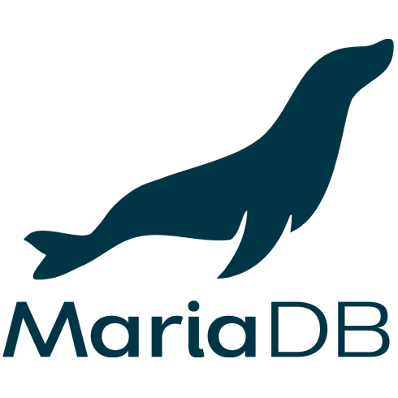

Réalisations - SAE 3a



Dans le contexte d'une SAE (Situation d'Apprentissage et Évaluation), nous avons dû créer (en ~4 mois) une application en PHP reliée à une base de données.
Au département informatique de l’IUT de Montpellier-Sète, le logiciel libre Scodoc est utilisé pour gérer les absences et notes les étudiants tout au long de leur scolarité à l’IUT.
Cependant, il n’y a actuellement pas de logiciel permettant aux jurys, enseignants et écoles recrutantes de facilement analyser / comparer ces résultats à la fin de l’année. L'IUT a donc besoin d'une plateforme web sécurisée pour gérer la poursuite d'étude des étudiants.
Cette réalisation devait donc formaliser tous ces résultats pour faire ressortir le profil de chaque étudiant, et de pouvoir le comparer à d’autres peu importe leur parcours.
De plus, le projet a été réalisé en applicant une méthode agile de développement, avec une revue de sprint (= phase) effectuée toutes les 4 à 6 semaines en présenciel avec le client.
Ce projet a été fait en équipe de 5, avec l'aide de:

Galerie


Contribution / Apprentissage
Ma contribution principale à ce projet fut la structure de la base de données (et ses fonctions / procédures / triggers / vues), la possibilité d'importer les résultats d'un semestre à partir des fichiers venant de Scodoc (image 4), et la génération d'un pdf avec tous les avis de pousuite d'étude attribués à un étudiant (image 3).
Nous avons débuté le projet en utilisant une base de donnée fonctionnant sous MariaDB, mais nous avons jugé préférable de passer vers PostGreSQL, ce qui m'a donné beacoup d'expérience dans les languages de bd relationelles, en plus des connaissances approfondies en PHP où les principes de structure MVC et CRUD ont été appliqués.